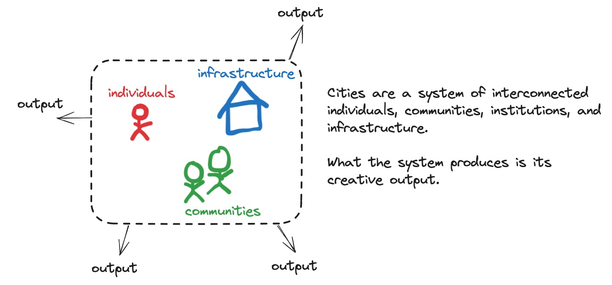
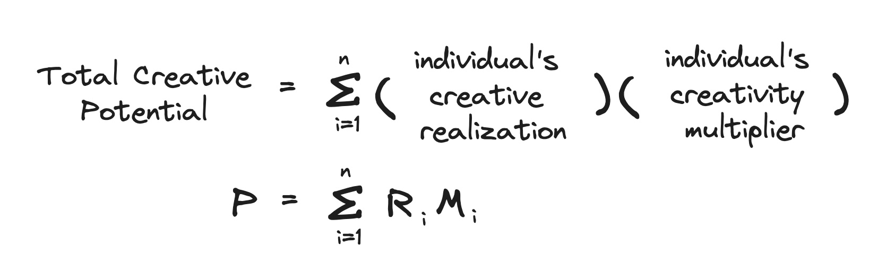
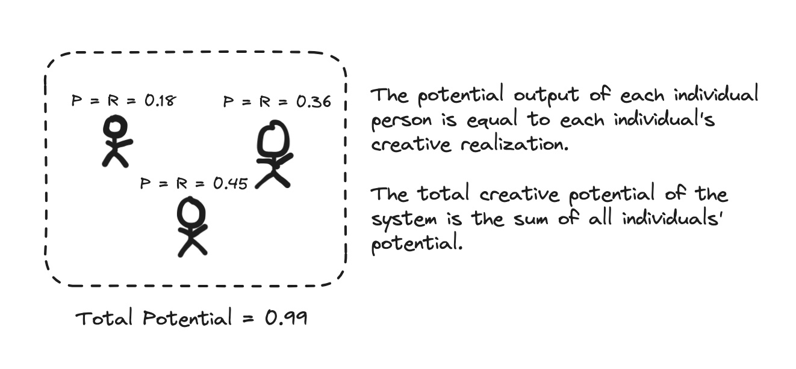
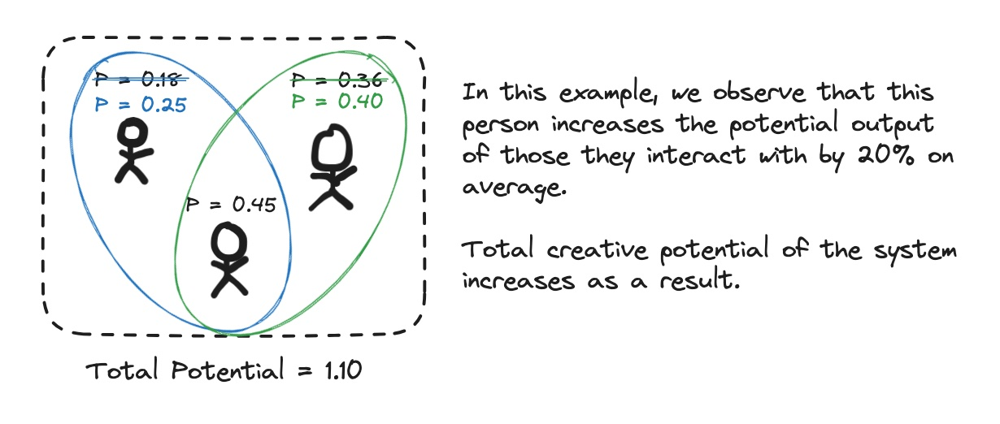

My friend Vin talks about how we need to increase the creative throughput of Toronto. I tend to agree. I think much of the frustration people have for the city is because it has the potential to be great, but this potential is unrealized.
First, what is creative output? Let's think of Toronto as a system. A system is made up of the individuals, communities, institutions, and infrastructure within it. What the system as a whole produces is its total creative output.
It's important to note that I use the word creative output to literally mean creating anything of value – music, films, food, apps, games, robots, communities, policy changes, etc.
We can see the greatness of a system like San Francisco that outputs as many technology companies as it does, or one like Los Angeles that creates so many films. Many in Toronto have the ambition for the city's own great outputs, but are unsure how to make it happen.
Below, I propose a simple but elegant formula to understand how. This provides a framework for us to understand issues and propose solutions:
Total Creative Potential, P, is defined as the total potential of a system to do creative things. Similar to how a raised demolition ball has the potential to do a lot of damage, or a drawn bow has the potential to shoot an arrow, a system has the potential to create things.
People yearn for bigger and better things to come out of the system, but the question is how. Intuitively, we know that if you want the demolition ball to do more damage, you raise it higher; if you want the arrow to go farther, you pull the bow back further. Similarly, if we want more creative output, we need to understand how to increase P.
Every person is on their own journey towards their full creative potential. How far along you are on your journey is your creative realization. In Maslow's Hierarchy of Needs, this is known as self‑actualization, and is represented by R. A fully realized person would have an R of 100%. For what it's worth, I think most people, myself included, are 20‑40% realized.
We can think of the total creative potential of the system as the sum of the creative realization of all the individual people within it. Intuively, we can understand that a system with extraordinary people will inevitably produce extraordinary things; a system where everyone is living at a stunted potential will produce few.
Now, at first glance, one might think that maximizing individual performance is sufficient to maximizing the system as a whole. However, consider the saying, "the sum is greater than the parts".
This phenomenon is called emergence in systems thinking. When people work on something together, they can create something bigger and better than what each individual could have made on their own. I think of it as the unintended, unexpected, and magical things that can happen when people work together. This is the creativity multiplier, M.
M can be a function of how effectively you work with others, how many people you work with, how often you collaborate, etc. I will leave it to the reader to derive all the possibilities on their own. Ultimately, it asks, how much of an impact do you make on others? How much do you accelerate other people's ideas, potential, and work?
Interestingly, M can be a positive multiplier (you make things better for everyone) or negative (you make things worse).
Now, let's return back to the original question: how can we make Toronto better?
According to our equation, we need to:
The first is straightforward. The second asks that each person be the best that they can possibly be – find the things you can excel at and excel at them. The last asks to improve the ways people interact with each other. This can be done by:
This equation creates a really elegant blueprint for the city. It also gives clear direction to individuals who ask themselves, "what can I do to make Toronto better?" Do things that maximize this equation.
Peer reviews welcome.